云间航线 Cloud Air
把一张飞行棋毯放在你面前的桌上。捏一下骰子，看它在骰盘里翻滚落定，飞机一格一格跳过去，落到本色格再连跳，踩中虚线格就横穿对面航道飞过去。
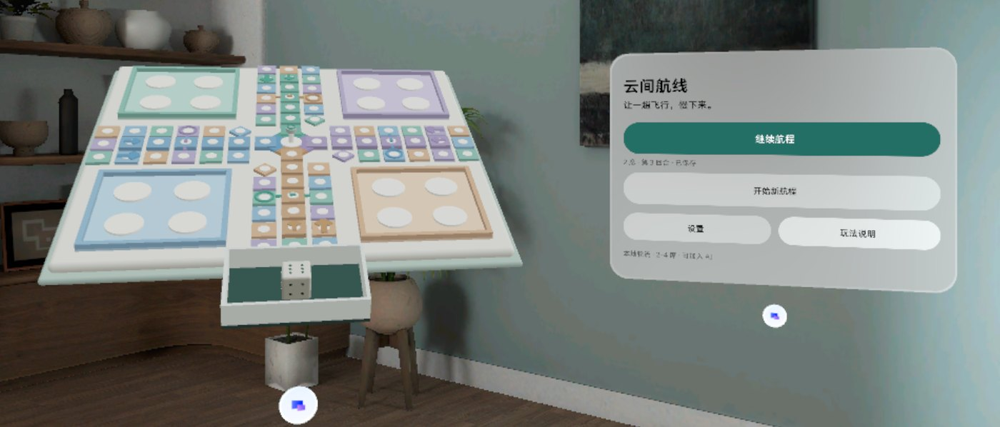
云港棋台 · Volumetric 骰盘 · 捏这里投掷 控制窗 · Planar保留调性，换掉三件事
V4 的定位、四色低饱和配色、席位与 AI、中英、暂停与六点二选一都保留。改动集中在让它更像一盘真的飞行棋。
棋盘回到经典棋毯
四角机库、十字四臂、52 格环道、四色循环格、6 格归航道。V4 的"中性环道 + 10→22 高架桥"换成本色连跳和虚线飞越，跳和飞才是这类游戏的乐趣。
骰子是棋台上的实物
Blender 骰子放在棋毯前方的毛毡骰盘里，捏骰子或骰盘就投。物理轨迹本地算出，先定点数再放动画，不在末帧偷翻面。
飞机是真模型，会跳会飞
Blender 低多边形飞机按机队上漆。逐格起落、爬升抬头、转弯压坡，飞越时横滚一周，被击退时转一圈飞回机库。
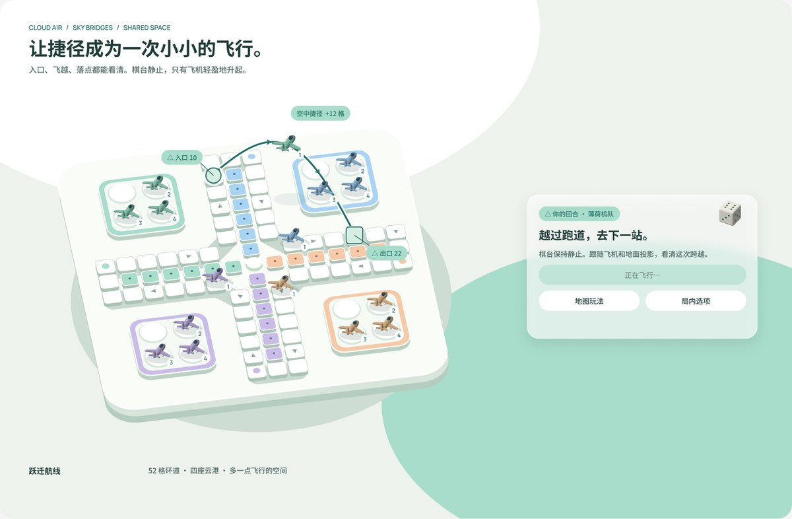
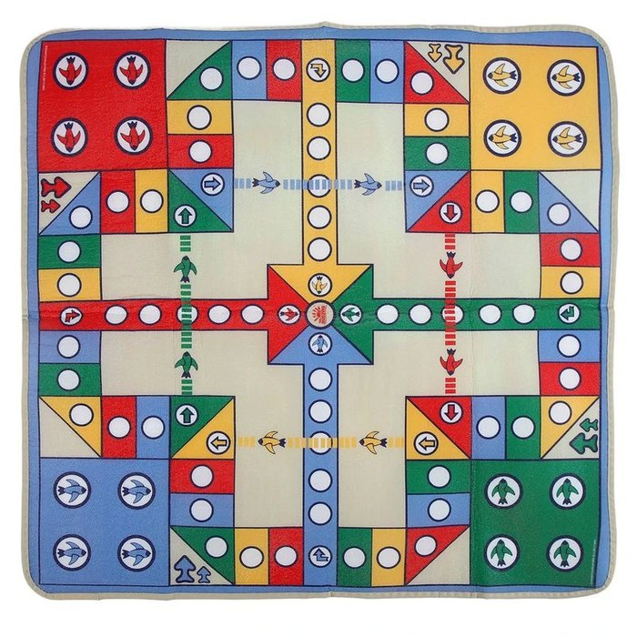
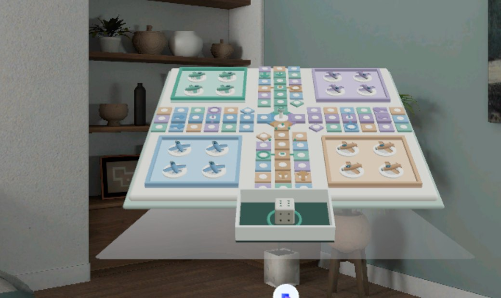
像画架一样朝你倾斜的棋台
整块棋台绕横轴向用户倾斜 28°，最低点（骰盘前沿）贴着体积底面，坐着也能看清远端两个机库。控制窗由系统摆在棋台右侧。
- 棋毯
- 0.72 m 见方，外加 12 mm 鼠尾草色包边。15 × 15 网格，格距 48 mm。
- 倾斜
- 28°。第一版 22° 时远端机库被压扁到约 40%，评审后加大。
- 骰盘
- 在棋毯前缘外侧，骰子边长 42 mm。深色毛毡底让象牙色骰子跳出来。
- 边界
- 稳定状态下所有物件完整在体积内，避免边界裁剪的性能开销。实测包围盒 x ±0.372 m。
- 控制窗
- Placement.right(棋台)，玻璃底，最小 520 × 320 dp。
可交互棋盘（与 App 同一套几何）
下面的棋盘由 App 里的 Board 坐标算法直接生成。选一支机队看它的完整航线，鼠标悬停或点一格看它对每支机队是第几格。
- 掷出 6 才能出机，飞机停在起飞格（带箭头），不额外前进。任何 6 都再投一次。
- 落到本色格，向前连跳 4 格（一次动作只跳一次）。
- 落到本色的环形标记格（第 20 格），沿虚线横穿对面臂飞到第 28 格，再连跳到 32。连跳落到第 20 格也会触发。
- 飞越穿过对面机队归航道的第 3 格，停在那里的飞机被送回机库。
- 最终落点上的对手飞机全部回机库；自己的飞机可以叠放；归航道不与他色相撞。
- 进中心要精确点数，多出的步数退回。四机先归航者胜。
- 6 点且"出机/前进"都合法时让玩家二选一；手动模式下再选具体飞机；全自动模式跳过选择。
捏一下就投，结果先定好
可以投的时候，骰子轻轻上下浮动，下面有一圈当前机队色的光环。注视骰子或骰盘捏合即投；控制窗的"投掷骰子"按钮是同样的入口。
先提交点数
游戏逻辑先公平地掷出 1–6 并写进存档。进程中途被杀，下次继续会重放同一个点数，不能借机重掷。
模拟一次真实投掷
240 Hz 刚体求解：重力、顶点与围边接触、反弹、摩擦、静止判定。与结果无关，同一种子永远同一条轨迹。
按立方体对称换面
整条轨迹从第一帧起乘同一个对称旋转，让自然落定的朝上面正好是提交的点数。落定后骰子放大一下（1 → 1.12 → 1）再交给棋盘。
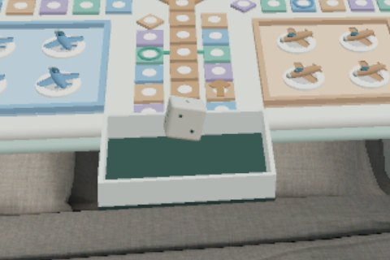
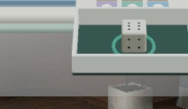
骰点约定沿用 Blender 模型：1 在 −Z、6 在 +Z、2/5 在 ±X、3/4 在 ±Y。单元测试覆盖 40 个种子 × 6 个结果全部落定且朝上面正确。
一格一跳，数得清走了几步
动效全部在 ECS 系统里逐帧驱动，不经过 Compose。设置里可选舒缓（×1.25）、标准、轻快（×0.65）；减少动态时飞机直接滑到落点，骰子直接显示结果。
| 动作 | 时长（标准档） | 路径 | 细节 |
|---|---|---|---|
| 起飞 | 0.80 s | 机库 → 起飞格，弧高 4 cm | ease-out，起飞音 |
| 走格 | 0.17 s + 0.12 s ÷ n / 格 | 每格一跳，弧高 1.2 cm | 爬升抬头 ±14°，转弯压坡 ≤15° |
| 连跳 | 0.55 s | 一条弧，弧高 5 cm | 起跳的格子和落点格抬起发光 |
| 飞越 | 1.10 s | 横穿对面臂，弧高 9 cm | 中段 360° 横滚；本队回合时弧线上浮 5 颗引导珠 |
| 击退 | 0.80 s | 沿弧线回机库，弧高 6 cm | 攻方落地后 0.1 s 开始，自转一周 |
| 归航 | 逐格 + 0.45 s + 0.40 s | 最后一跳 4 cm 落到塔台旁 | 原地自转一周，归航音；第 3、4 架叠在前两架上 |
| 回合切换 | ≈ 0.24 s | 当前机队的机库围边变深并抬起 3 mm | 塔台信标与骰子光环换成该队颜色 |
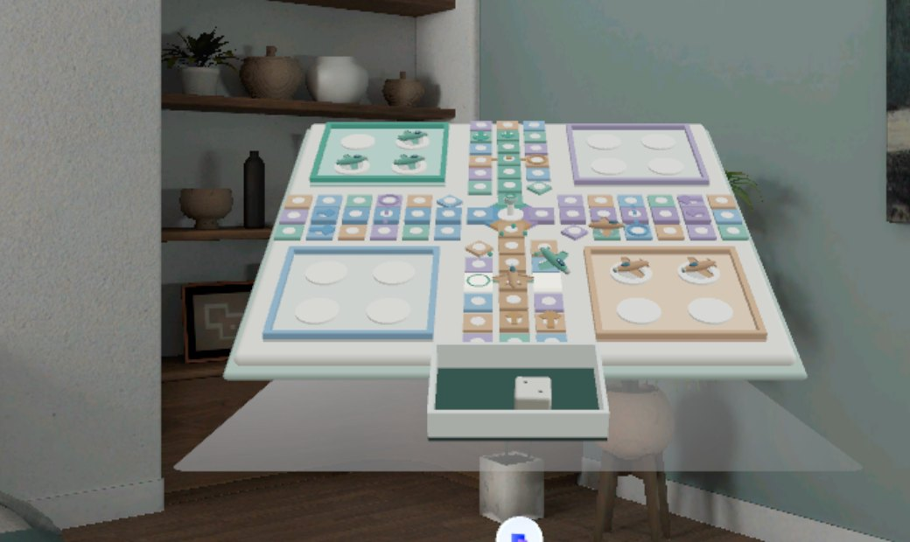
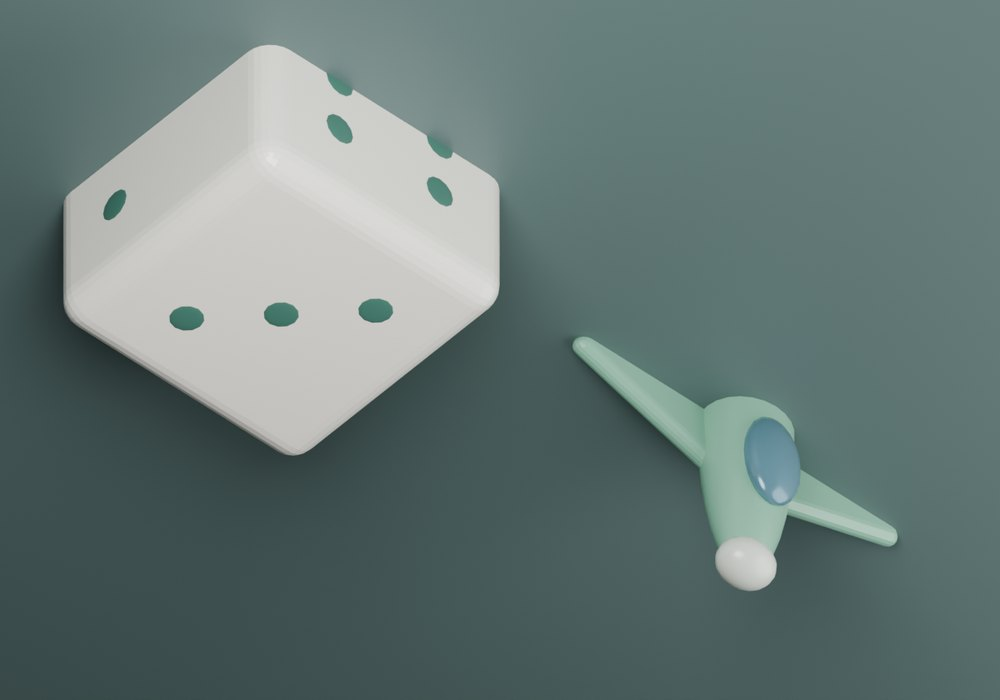
一次只给一个主动作
全部用 SpatialUI 组件和 PicoTheme 角色色，系统玻璃做底。顶部是当前机队的回合药丸，底部是四支机队的飞机点阵（空心在机库、浅色在途、深色已归航）。
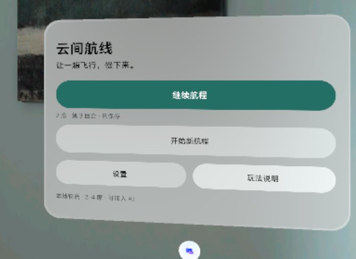
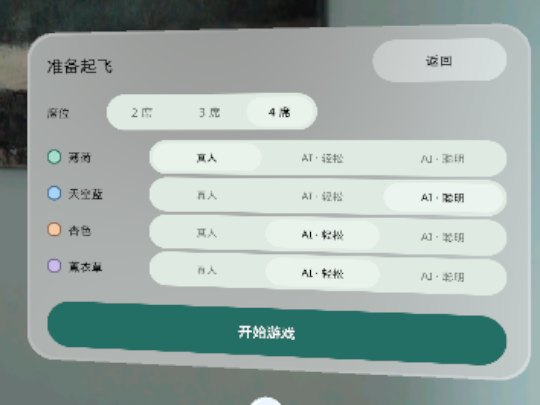
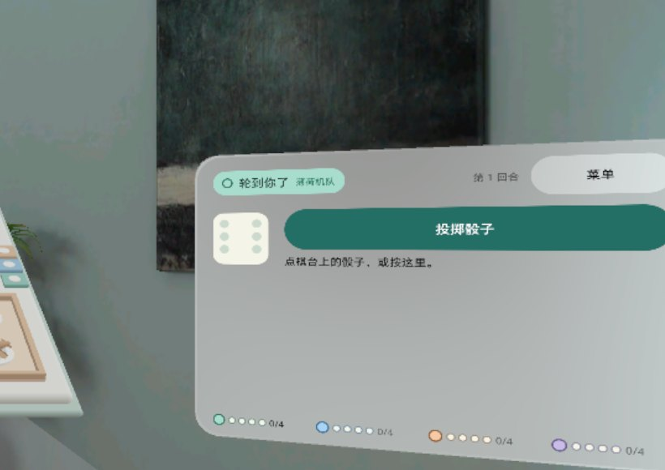
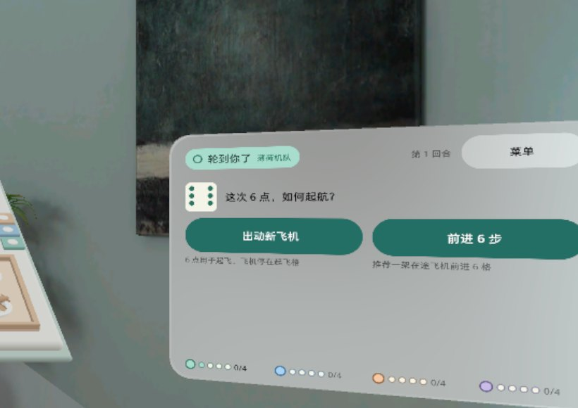
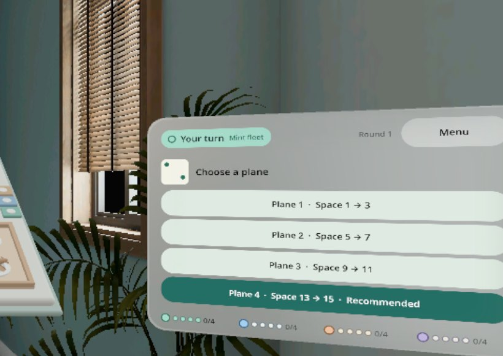
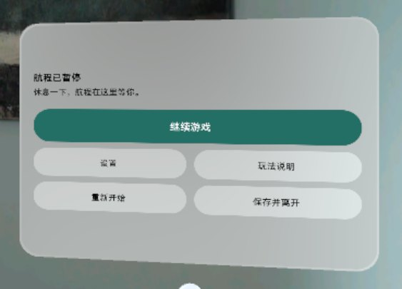
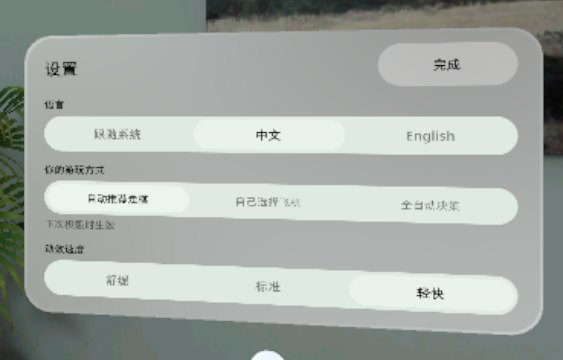
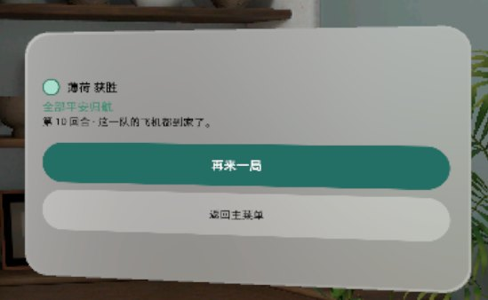
四色从浅到深一条色阶
每支机队一条五级色阶，按用途取不同深度。界面字体统一 Noto Sans（中文回退系统 CJK）。
色阶从左到右：机库底板（原色）· 环道格（混 40%）· 归航道（55%）· 机身漆（60%）· 箭头 / 围边 / 塔台花瓣（深色）。
模拟器上的五轮迭代
设计评审 2 轮、真实注入输入的 QA 2 轮，每轮的问题都修完并复验。以下数字来自最后一次构建。
还没验证 / 已知问题
- 控制窗开局时有约三分之一在模拟器视野外。位置由系统 Placement.right 决定，需要在头显上确认。
- 没有上过真机：物理尺寸舒适度、手部与手柄交互、帧率都只在模拟器上看过。
- 模拟器帧率低，走格时长比设计值略长（4 格 0.90 s，设计 0.80 s）。
项目目录 Downloads\cloud-air，包名 io.embodit.cloudair。设计合同、评审和 QA 报告都在仓库的 design/ 与 docs/ 下。